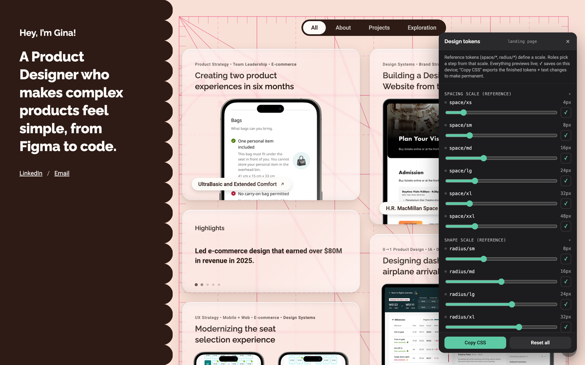
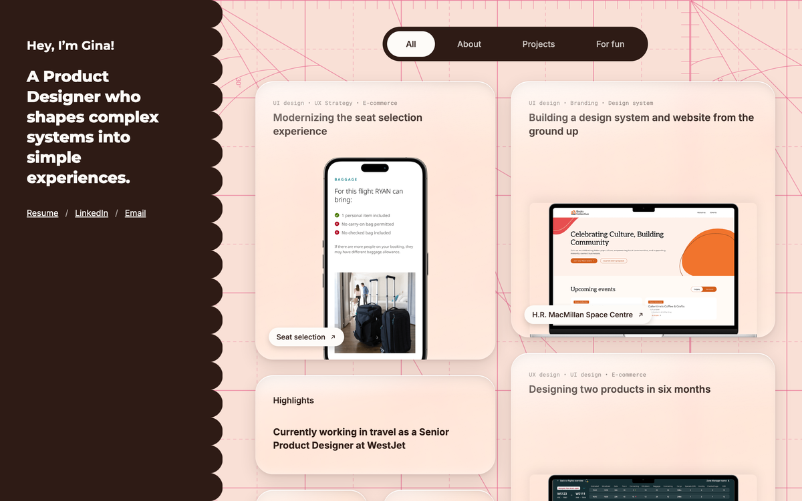
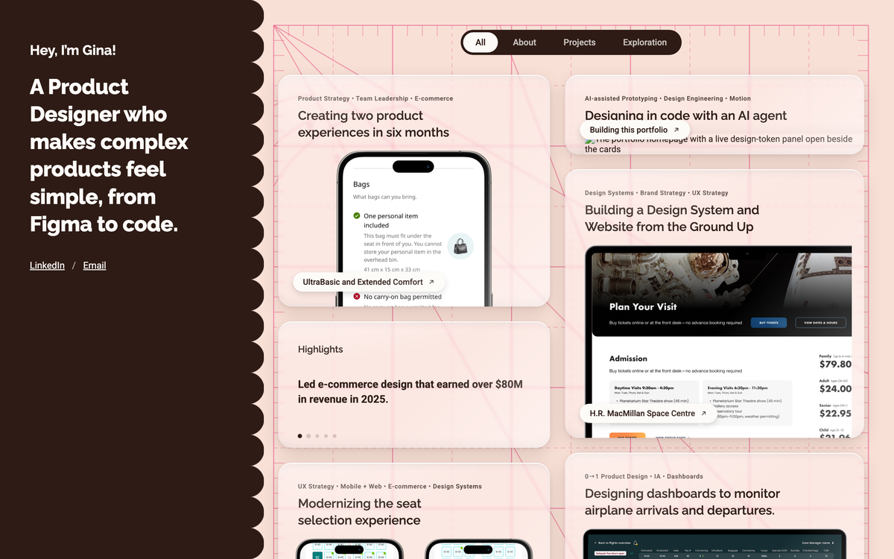

Designing in Code with an AI Agent
I rebuilt this portfolio by hand in HTML, CSS, and JavaScript, pairing with Claude Code as my engineer, and turned the tools I made along the way into something reusable.

TLDR
I wanted a portfolio where every detail, from the glass material to the motion, was mine to decide rather than a template’s, and a real project to sharpen the AI-assisted workflow I now use at work.
Paired with Claude Code as my engineer. I set direction, reviewed every change in the browser, and kept a living design-system doc so the agent and I worked from the same rules.
A hand-built static site with four case studies in 13 days, a two-tier token system with a live tuning panel, and a reusable Claude Code skill that brings that panel to any web project.
Background
A designer directing an engineer
The site is plain HTML, CSS, and JavaScript on GitHub Pages, with no framework and no build step. I didn’t want the agent to generate a site for me; I wanted to direct one the way I’d work with a front-end engineer: describe the intent, look at what came back, and decide.
The loop stayed small on purpose. I described one change, the agent implemented it, and I checked it in the browser at desktop and mobile widths before keeping it. Every change landed as its own commit with the reasoning written out, so the git history reads like a design log of what I tried and why.
The Material
Pushing a glass effect until it felt right
The cards are meant to read as liquid glass, bending the grid behind them the way a real lens would. Getting there took more rounds than anything else on the site, because each round was a judgment call, not a code problem.
Iteration 1
From frosted to refractive
A plain blur looked flat. I pushed toward Apple’s Liquid Glass with layered edge highlights and a light source in the top-left, then added real refraction: an SVG displacement filter that warps the pixels behind each card. Each colour channel bends by a slightly different amount, which gives the subtle colour fringing real glass has.
Iteration 2
Too much, then just enough
The first refraction pass pulled blotchy patches of colour across the whole card. Later, matching a reference panel’s slider values literally pushed the distortion past 70, which read far too strong in a browser. I dialed it back twice before settling on a much quieter setting.
Guardrail
Never broken, just less fancy
Browsers that can’t render SVG filters behind an element quietly keep a plain blur instead. Nobody gets a broken card; some people just get less bend.


The System
Making the design tunable, not just coded
Once values were scattered through CSS, adjusting the look meant hunting for numbers. So I restructured everything into a two-tier token system, the same shape Material Design uses: reference tokens define the scales, and role tokens point at one step of a scale.
Design Decision
Pick a step, never a pixel
Spacing and radius roles are chosen from a scale (xs to xxl), not typed in as raw numbers, and colours are named by what they mean (surface, interactive), not by hue. Changing a scale step updates everything that uses it.
Feature
A live tuning panel
I had the agent build a floating panel that exposes every token as a live control: sliders for scales, pickers for roles, and colour pickers labeled by meaning. Changes preview instantly, and “Copy CSS” exports the finished tokens to make them permanent. The panel never ships. It’s excluded from the repo and opens only on my machine.
Feature
Packaged for reuse
Once the panel proved useful, I turned the whole approach into a Claude Code skill. It refactors any web project’s hard-coded values into the same reference and role token structure, then generates the panel for it.
The Motion
Motion that explains what changed
Every transition on the site answers “where did that go?” rather than adding flourish. Filtering the homepage doesn’t hide cards. It dims the ones that don’t match, moves matches to the top, and animates each card from its old position to its new one, so you can follow what moved.
Dimmed cards are also removed from keyboard tab order, so the filter works the same way for someone navigating without a mouse. Motion uses two easing families, a weighted one for lifts and a soft one for settling in, so the site moves with one consistent feel.
Key Decisions
Three calls where a reasonable person could have gone the other way.
A site builder vs. hand-built static code
A site builder would have been quicker to launch and comes with a content editor.
Plain HTML, CSS, and JavaScript, directed through an AI agent, with full control over material, motion, and markup.
No built-in CMS. I solved that by keeping all site copy in plain notes that the agent syncs to the pages, so editing words never means editing code.
Card-to-page transitions vs. the glass effect
Project cards originally grew into their case study page with a view transition, which was a nice piece of continuity.
Removed it. In Chromium, the transition isolated each card’s rendering and silently stopped the glass from sampling the page behind it.
Gave up a navigation animation to keep the material that defines the whole homepage.
Ship the tuning panel vs. keep it local
Shipping the panel publicly as a playful “tweak my site” feature.
Kept it a private tool, excluded from the repo and opened on demand.
Visitors never see it, but the public site stays light, and the panel can be as dense and utilitarian as a working tool should be.
Working Rules
Writing it down so the agent remembers
An agent starts each session without memory of the last one, so I kept a design-system document in the repo as our shared source of truth. It covers tokens, components, patterns, and the gotchas we’d already paid for once, like a stacking-order bug that made the background grid vanish.
Rule
Never invent a number
The most important line in that doc is about content, not code: no fabricated metrics, quotes, or research insights. Anything without real content stays marked as a to-do. This portfolio represents real work, and the agent follows the same rule I do.
I use the same approach at work, just earlier in the process. On Seat Selection, AI-assisted prototypes helped stakeholders agree on scope in weeks instead of months.
Takeaways
The agent is fast; taste is still the bottleneck
Writing code stopped being the slow part. The slow part was the glass: rounds of looking, deciding it wasn’t right, and figuring out why. Working with an agent didn’t remove design judgment. It made judgment the whole job.
Judge in the real medium
Values that look right in a design tool’s panel can read completely differently in a browser. Building in code meant I evaluated the real thing at real sizes, on real screens, instead of approving a picture of it.